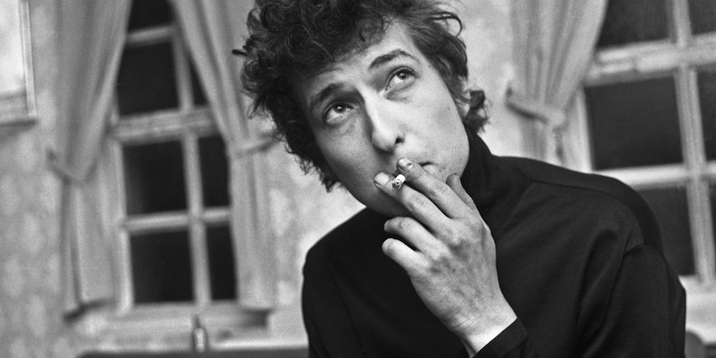

Bob Dylan
(Robert Allen Zimmerman; Duluth, Estados Unidos, 1941) Cantante y compositor estadounidense de folk y rock, una de las grandes figuras de la música contemporánea, cuya producción musical lo erigió en un referente entre los cantautores. Su admiración por el poeta Dylan Thomas le llevó a adoptar el apellido artístico por el que se hizo popular.

En la década de 1960 creó un estilo propio a partir de la recuperación de la música folk, a la cual añadió unas letras cargadas de simbolismo y reivindicaciones,
que le convirtieron en un líder para la juventud contestataria de su país. Canciones como Blowin’ in the Wind, Maters of war o Talkin’ World War III blues revolucionaron
el pop mundial y abrieron nuevos caminos tanto para cantautores como para bandas de rock.
En 1965 recurrió a los instrumentos eléctricos e inició una serie de bruscos virajes, tanto estilísticos como espirituales,
que le valieron numerosas críticas de los seguidores más puristas del folk.
Tras un largo período de silencio discográfico, volvió a llamar la atención con un trabajo recopilatorio grabado en directo y sin instrumento
s eléctricos, Unplugged (1995). Algunos de sus álbumes más destacados son The freewheelin' Bob Dylan (1963), Blood on the tracks (1975)
y Oh mercy (1989), mientras que Love and theft
(2001) y Modern times (2006) figuran entre sus últimos discos. Nominado en varias ocasiones para el premio Nobel de Literatura, recibió el preciado galardón en 2016.